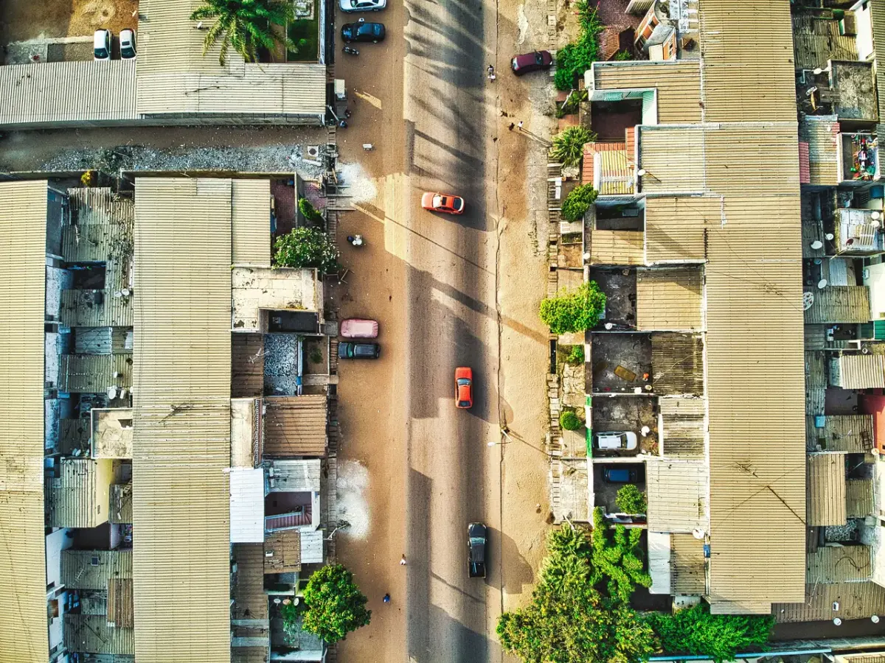

Most diaspora buyers do not buy a finished house in The Gambia. They buy a plot and build — usually in stages, usually from abroad, usually over several years. This guide covers the permit and what it does not do, the money and how little of it is actually published, the contractor, the utilities, and the ways self-builds go wrong.
The legal starting point
Development in The Gambia is controlled by the Physical Planning and Development Control Act 1990 (Act No. 1 of 1991). It establishes a Planning Board (s.3) and Planning Authorities (s.5), provides for four types of plan (s.8), and devotes a whole Part to development control — enforcement notices (s.31), stop notices (s.32), revocation of a permit (s.33) and appeals to the Minister (s.35).
Section 24 is the operative one: no person shall carry out any development unless a development permit has been issued by the Planning Authority for the area. "Development" is defined by s.1 as building or engineering works, excluding maintenance and temporary structures — which is why a boundary wall and a set of boys' quarters need permission as much as the main house does. No section of the Act names fences or outbuildings specifically, and the Development Control Regulations 1995 that would settle the detail are not published anywhere we could find, so treat this as the consequence of the definition rather than an express rule.
What the penalty actually is
Section 38 is stronger than most readers expect. Contravening the Act, the regulations or a permit — or failing to obtain a permit in an area where a plan exists — makes you liable, in addition to having the development removed, to a fine of up to D2,000 or up to one year's imprisonment or both.
The fine is a 1991 figure and is now trivial. The deterrent is demolition, and demolition happens. The Department of Physical Planning and Housing, with the National Disaster Management Agency, bulldozed structures on the Ebo Town Badala wetlands in June 2025, most of them new and at advanced stages of construction (The Point, 27 June 2025). On the Salaji demolitions, the Minister for Lands told the National Assembly in November 2025 that the owners "did not obtain this Development Permit during due process", refused compensation, and made the point that matters most here: a development permit alone does not confer ownership. It is one step in a longer process, not a title document. Verify the land separately — see how to verify land title in The Gambia.
Two things about the machinery you should know before you rely on it
First, the National Physical Planning Board — the body s.3 requires — was only inaugurated on 4 March 2026, the Minister acknowledging that it had "previously faced operational and logistical challenges" (The Point, 5 March 2026). Anyone describing the planning system in confident present tense is describing machinery that has been running again for a matter of months.
Second, there is a genuine ambiguity about who your Planning Authority is. The Act has the Minister establish Planning Authorities (ss.1 and 5). The Local Government Act 2002, s.90(1), says "Every Council shall be the planning authority for its Area". The two statutes use the same term in different contexts and neither repeals the other. In practice, applications for Greater Banjul are handled by the Department of Physical Planning and Housing under the Ministry of Lands, Regional Government and Religious Affairs, and Area Councils also levy development-related charges. Establish in writing, per plot, which body you are dealing with before you pay anyone a fee.
We could not find a published address for the Department of Physical Planning and Housing, a current fee schedule from it or from any Area Council, or the text of the Development Control Regulations 1995. Earlier versions of this guide gave an address at The Quadrangle in Banjul; we have removed it because we cannot source it. Confirm the office, the forms and the fee at the counter before you budget.
The development permit, step by step
The only fully documented account of the Gambian permit chain is the World Bank's Doing Business 2020 profile for Banjul, whose data was collected in May 2019 for a standardised 1,300.6 m² two-storey warehouse. Treat every figure below as a 2019 measurement of a commercial case, not a current domestic fee. It is still the best map that exists.
| Stage | What it involves | Time (2019 measurement) |
|---|---|---|
| Application | Buy and lodge Form 1, with three sets of drawings and evidence of ownership — a deed, a lease, a certificate of occupancy or a receipt for land tax | 1–2 days |
| Decision | The Authority approves, approves with conditions, or refuses, and must notify you in writing within thirty days (s.28). Measured at about 28 days in practice | ≈28 days |
| Permit issued | Form 2, plus one stamped set of approved plans to be kept on site, plus Form 4 and Form 9 | — |
| Before you start | Form 4, the commencement notice, must be lodged before work begins. The World Bank recorded that in practice this often does not happen — which does not make it optional | 1 day |
| During the build | Roughly two unscheduled inspections, against the stamped drawings | — |
| Completion | Form 9, final inspection, then the certificate of completion | ≈35 days |
| Then utilities | NAWEC application, survey, estimate and connection | ≈100 days |
End to end the World Bank measured 12 procedures and 173 days from first enquiry to a working water connection. Plan the programme around that, not around the 28-day permit alone.
The two-year clock — the omission that costs staged self-builders most
Section 30(2): a development permit is valid for two years from the date of issue unless it is renewed. Renewal is by application in the appropriate form on payment of the prescribed fee (s.30(3)).
If you are building in stages from abroad — the normal diaspora pattern, and the premise of this guide — your build will very probably outlive your permit. Diarise the expiry the day the permit is issued, and renew before it lapses rather than after a stop notice arrives.
Appeals, and the deadline nobody mentions
- Refusal of a permit: appeal to the Minister under s.29. The Minister decides within thirty days.
- An enforcement notice or stop notice: appeal to the Minister under s.35 within fifteen days — and you must stop all development before making the appeal. The Minister's decision is final.
Fifteen days is short, it runs from the notice, and carrying on working while you argue undermines the appeal you are making.
The fee
Section 26 leaves the fee to the Minister to prescribe, and the basis is the floor area of the building. The only rate anyone has published is the World Bank's: D10.00 per m² plus D15 for the form, described as unchanged since January 2008 and measured in May 2019. On a 150 m² house that basis would give roughly D1,515. We would not budget on it. No current fee schedule is published by any Gambian government site we could reach, and the World Bank's own note says the Authority "does not have an official fee schedule". Ask at the counter and get the assessment in writing.
Environmental clearance and the coastal 150-metre rule
For an ordinary inland house, you will not need an environmental study. Under the Environmental Impact Assessment Regulations 2014, made under s.63(1) of the National Environment Management Act 1994 and administered by the National Environment Agency, Schedule B puts a "new residential layout of less than 2 hectares or residents of less than 100 persons" in Class C — no environmental study required. A single house on a 300–500 m² plot sits comfortably inside that.
On the coast the answer changes. Class A — full environmental impact study — includes "major structures within 150 metres of the high water mark". "Major structure" is not defined in the Regulations. If your plot is inside that band, this is a live question rather than a theoretical one, and NEMA s.22(6) blocks the grant of any licence or permit under any law for a listed project until the environmental process is complete. Regulation 6 provides for a stop notice requiring immediate closure and evacuation of a site where a project requiring an assessment has started without one.
Published NEA fees, from regulation 12: D1,000 for the screening form; processing after screening D25,000 (Class A), D10,000 (Class B), D5,000 (Class C); and the environmental approval fee at 1% of the development cost. Annual renewal is D5,000, D3,000 or D2,000 by class. Regulation 11 requires the screening decision within twenty working days.
If you are buying to build near the sea: put the screening question to the NEA in writing before you exchange, not after. A 1%-of-cost approval fee and a full impact study are not line items you want to discover once the foundations are priced. Coastal setbacks are a separate matter again — there is no statutory erosion buffer in The Gambia; see best areas to buy on the Gambian coast.
The build sequence that works
- Verify the title first. Everything below assumes the plot is genuinely yours. If you have not done the searches, stop here and read how to verify land title in The Gambia.
- Check whether you are even allowed to be sold it undeveloped. On state leasehold land, regulation 22(l) of the State Lands Regulations 1995 requires the Minister's written consent to any sale or assignment, "and such consent shall not be granted if the lessee has not developed the demised premises in accordance with the covenants in that behalf". An undeveloped plot may not be lawfully assignable until it is built on. See freehold, leasehold and customary land explained.
- Get drawings from an architect. You can use an architect outside The Gambia, but tropical construction has its own techniques and specifications, and the materials differ from what a European practice will specify by habit. The World Bank recorded that plans must be verified by a licensed engineer, but scored The Gambia 0 out of 4 on professional certification: the only requirement is a relevant university degree, with no registration body or qualifying examination. Check your professional's actual credentials yourself.
- Apply for the permit. Form 1, three sets of drawings, evidence of ownership. Keep the stamped set on site.
- Lodge Form 4 before you start work.
- Build the fence before anything else. It secures the site and fixes your boundary on the ground before a single block of the house is laid — the alternative is discovering half way up that a corner of your bungalow sits on the neighbour's plot. Build it exactly to the approved plan.
- Build the boys' quarters next. On a self-build it gives you lockable storage for materials and tools from day one. A shipping container does the same job and can be sold on afterwards.
- Get a bill of quantities. A quantity surveyor working from your drawings tells you what quantity of material the structure needs. It usually stops short of finishing items — fans, sanitaryware, fittings — which you price yourself at the suppliers.
- Build to the stamped drawings. Inspections are against them, not against what you decided to do later.
- Lodge Form 9 and get the certificate of completion. Do not skip this because the house is habitable. It gates the water connection, and its absence will follow the house to whoever you sell it to.
What materials cost
We need to be straight with you about where the numbers below come from, because the earlier version of this guide was not.
The materials table that circulates on Gambian property sites — including, previously, on this one — is a single list published by the commercial information site Access Gambia, last updated 7 January 2026. It is described there as "just an approximate average prices guide", and the page's own disclaimer tells readers not to rely on it for property decisions. It is not a survey, we did not conduct one, and describing it as "Gambian building-material price surveys" — as this guide previously did — was wrong. The Gambia Bureau of Statistics publishes a consumer price index and a producer price index but no construction cost index and no building-materials price index.
So: the figures below are one commercial website's approximate list, at 7 January 2026, reproduced with attribution rather than dressed up as research. Price everything again the week you buy.
| Material | Listed price (Access Gambia, 7 January 2026) |
|---|---|
| Steel rebar, 10 mm | D425 |
| Steel rebar, 12 mm | D600 |
| Steel rebar, 16 mm | D1,000 |
| Sand, single trip (11 m³) | D9,300 |
| Laterite gravel (11 m³) | D8,000 |
| Basalt gravel (20 metric tons) | D85,000 |
| Corrugated roof sheets, 0.14 mm (packet) | D2,300 |
| Corrugated iron sheets, 0.16 mm (packet) | D2,600 |
| Decrabond roofing, per sheet | D400 – D600 |
| Ceramic floor tiles, per m² | D430 |
| Marble floor tiles, per m² | D1,300 |
| Water-based paint, drum | D2,100 |
| Acrylic paint, drum | D3,900 |
We have dropped the euro column that used to sit beside these prices. Converting an approximate dalasi list at a single hard-coded rate implies a precision that is not there. If you need a conversion, use the Central Bank of The Gambia's Exchange Rates for Valuation Purposes on the day; through August 2026 those ran at roughly D72.09–D72.94 to the dollar, D84.95–D86.73 to the euro and D95.09–D98.01 to the pound.
Cement — the one price that is genuinely tracked
Cement is the exception, because the fact-checking organisation DUBAWA has repeatedly gone to Gambian retailers and recorded what they charge. This guide previously published D525–D575 with an assertion that "the trend has been upward". Both were wrong at the time of publication, and we have removed them. The verified record:
| Date | Price, 50 kg bag | Source |
|---|---|---|
| April 2024 | D380 → D575 after the import duty rose from D30 to D180 a bag | DUBAWA |
| 15 December 2025 | D415 – D650 nationwide, depending on brand and outlet | DUBAWA field visits |
| 18 December 2025 | Government lifts the cement import tax | Reported |
| 1 January 2026 | D415 (Jah Oil, market price) | The Point, 5 January 2026 |
| March 2026 | D390 wholesale, D415 retail, checked at Manjai, Coastal Road, Kanifing and Brikama | DUBAWA field visits |
| 20 August 2026 | ≈D490 (Tiger), D495 – D500 (Gacem) in Brusubi, Sukuta and Brikama | DUBAWA, 27 August 2026 |
Two lessons rather than one. The price is not on a simple upward path — it fell sharply when the duty was lifted, and Senegalese cement exports to The Gambia ran roughly tenfold higher in the first quarter of 2026 than a year earlier. But supply is a real programme risk: 2024 brought a duty shock, 2025 an acute shortage with long waits, and 2026 a partial recovery. Budget for interruption, not only for price.
We found no reliable published data on Gambian building-trade wages — no daily rate for a mason, labourer, carpenter, steel-fixer or foreman, and no published figure for what share of a build cost labour represents. The Gambia Bureau of Statistics publishes labour-force participation and informality, not trade rates. We therefore publish no labour rates. Get three written quotations locally instead, and treat any single figure you are given elsewhere as one contractor's opinion.
What a build costs, and why nobody can tell you precisely
This is the part of the guide that was most wrong, so it is worth setting out plainly.
The construction cost per square metre quoted across the Gambian property internet — including in earlier versions of this guide — traces to a single sentence on the same Access Gambia page: "The general cost of building construction can vary between 300 per square metre and 500 or more per square metre depending on the building design and quality of materials used." That sentence names no currency. This guide previously read it as euro and converted it to D25,500–D43,000. The CAHF Housing Finance in Africa Yearbook, the report usually cited as independent confirmation, reads the identical sentence as US dollars and publishes D23,555–D39,259 per m² — and its footnote points back to the same page.
So the two sources that appear to agree are one source counted twice. Worse, CAHF's own country data table records the national average construction cost per square metre as "n/a" and the cost of a standard 50 kg bag of cement as "n/a" — the same publication declines to certify these as country statistics. No Gambian statistical, professional or contractor body publishes a construction cost index, and the international construction cost indices produced by Turner & Townsend and Arcadis do not cover The Gambia at all. There is nothing to check the figure against.
There is no independent Gambian evidence for any construction cost per square metre. We are not going to pretend otherwise, and we are not going to delete the numbers either, because our valuation tool has to assume something. So we publish them for what they are: MyKunda's own working assumptions, disclosed so you can argue with them.
| Working assumption | What it is meant to represent | Basis |
|---|---|---|
| ≈ D17,000 per m² | A simple local build — block walls, cement floor, corrugated roof | Our own assumption. No published source exists for it at all. |
| ≈ D25,500 per m² | A standard finish | Our reading of the Access Gambia sentence as euro, at an August 2026 rate |
| ≈ D43,000 per m² | A higher finish | Our reading of the same sentence as euro, at an August 2026 rate |
These are the tiers the MyKunda valuation tool works with, so a figure there and a figure here will agree with each other. That is internal consistency, not corroboration, and it is not a reason to trust either. Do not use them to set a budget or an asking price. Use a quantity surveyor's measure of your own drawings and three written contractor quotations.
For scale rather than for budgeting: CAHF reports the cheapest newly built house by a formal developer or contractor in an urban area at D3,000,000, at a size of 45 m² (2022 data). That is a sale price including land, infrastructure and margin, not a build rate — but it is a sourced number, which is more than the per-m² band can claim.
Whatever you build, the house is not the whole bill. Add the plot, the architect, planning fees, the fence, the boys' quarters, a borehole and tank if there is no mains water, a generator or solar with battery, the NAWEC connection, and the professional fees. The earlier version of this guide said the house is "roughly two-thirds of what you will actually spend". We could not source that rule and have removed it; price each item on your own site instead.
Tax on a build — VAT, withholding, and one thing GRA has not settled
VAT at 15%
The standard rate of VAT is 15%, and registration is compulsory for any business with taxable supplies of at least D2,000,000 in a tax year (GRA). A turnkey contractor building a house of any consequence is over that threshold and must charge it. On a D4,000,000 contract that is D600,000 you need to have expected. Ask every tenderer, in writing, whether the price quoted is VAT-inclusive — the tiers and quotations you will be shown usually do not say.
Withholding tax on contract payments — GRA publishes two answers
The earlier version of this guide stated flatly that withholding tax on contracts is 10% for a resident contractor and 15% for a non-resident. That is one of two figures GRA itself publishes, and we should not have presented it as settled.
| GRA source | Resident | Non-resident |
|---|---|---|
| GRA Withholding Tax on Contract Payments brochure, and the Ministry of Finance 2025 Budget Speech — the current position | 8% for suppliers, consultants, contractors and subcontractors for works, labour, materials or services (5% for resident contractors on government public works) | 10% |
| GRA's domestic tax FAQ page, still live as at August 2026 | 10% | 15% |
Both agree on the mechanics, and those are what actually bind you: the payer withholds and remits, not the builder; remittance is due within 15 days after the end of the month of payment; and you must issue the contractor a withholding tax certificate. Put the rate, the mechanism and who bears it into the contract, and get the applicable rate from GRA's Domestic Tax Department in writing before you sign. We could not resolve the conflict ourselves: the consolidated text of the Income and Value Added Tax Act 2012 is not published by GRA or the Ministry of Justice.
One further open question, and it matters to a private self-builder: it is not published whether an individual building a family home — not carrying on a business — is a withholding agent at all. Ask GRA. Do not assume either way.
Water and power — what a NAWEC connection actually involves
The utility is NAWEC, and its published customer terms answer most of what a self-builder needs to know.
- Application fee: D500, non-refundable, at any branch, Monday to Friday. The World Bank recorded the same D500 in 2019 and noted it is deducted from the connection fee.
- What you must produce: proof of property ownership — NAWEC's list is "title deeds, Alkali's transfer document, local authorities transfer document, or any receipt of rate payment" — valid ID, the nearest NAWEC pole number and a location sketch.
- Timing: site survey within about two weeks of application; installation not more than about four weeks after payment.
- Distance limits, and this is where the money is. A standard electricity connection runs up to 45 metres from the nearest low-voltage distribution point. A standard water connection runs up to 150 metres from the nearest mains. Beyond those distances you need a line or main extension, and you pay for it — either by waiting for NAWEC's own network expansion or by engaging a NAWEC-licensed contractor.
- Leaks before the meter are NAWEC's problem; after the meter they are yours.
Measure the distance to the nearest pole and the nearest water main before you buy the plot. It is a two-minute check that decides whether your connection is a standard job or an extension you fund.
Running costs, from the 2023 tariffs determined by the regulator PURA and published by NAWEC: domestic electricity D13.85 per kWh for the first 300 units, then D14.06, D14.43 and D15.46 in higher bands; water D6.48 per m³ for the first 10, then D14.15, D18.86 and D23.58; sewerage D5.00 per m³ of water consumed. NAWEC's own caveat is that connection charges vary with distance and capacity and are quoted per site.
The sequencing point: the World Bank recorded that the certificate of completion is needed to obtain a water connection. A house finished without going back for Form 9 and the certificate has a foreseeable problem getting mains water — and passes it to the next owner.
Context worth knowing: NAWEC was running a 26 MW generation deficit as at April 2026 against a peak demand of about 140 MW in August 2026, roughly half of supply is imported, and national electricity access was about 69% in 2024. No new water treatment plant has been built in over seventeen years; one is under construction at Tujereng. Budget for a tank, and think hard about solar with battery storage rather than treating standby power as an extra.
Choosing between the two contracts
You have two realistic routes, and they carry very different risks.
| Labour & materials (turnkey) | Labour only | |
|---|---|---|
| Who buys the materials | The contractor | You |
| Your time commitment | Low | High — or a trusted person on the ground |
| Main risk | Quality is invisible until it is finished | Materials walking off site |
| VAT | Charged on the whole contract if the contractor is registered | Charged on the labour element; you pay VAT on materials at the merchant |
| Suits | Owners who cannot be present | Owners with family or a project manager in-country |
Whichever you pick, have the contract drawn up by a Gambian conveyancing solicitor and signed by both parties, and tender it to several contractors before you sign. Do not accept a verbal price. Bear in mind that Gambian property litigation is slow — Foroyaa reports property cases running over three years — so a contract that is easy to enforce matters more than a contract that is favourable but contested.
The front-loading trap
Gambian builders will often try to load most of the cost of the construction into the early stages of the bill of quantities. Resist it. Finishing is the most expensive phase, and if a contractor walks away mid-build you want the unspent money still to be yours.
Insist on a payment schedule tied to completed, inspected stages — foundation, ring beam, roof on, plastered, finished — with the largest tranches at the end, and hold a retention of five to ten per cent for a defects period after handover. Rain finds every mistake in the first wet season; you want money still owing when it does.
Who is liable if the house turns out to be defective
In most jurisdictions this is a short answer about decennial liability or a warranty scheme. In The Gambia the answer is shorter and much worse.
The World Bank's building quality control index scored The Gambia 3.5 out of 15, and 0 out of 2 on liability and insurance: "no party is held liable under the law" for latent or structural defects after the building is in use, and no party is required by law to obtain insurance against them.
Read that against the retention advice above. In The Gambia the retention is not belt-and-braces — it is the main remedy you will have, alongside whatever the written contract says. That changes how you should set it:
- Hold the retention for a period that spans at least one full wet season, and say so in the contract, because that is when roofing, drainage and damp defects show.
- Define in the contract what a defect is, who inspects, how long the contractor has to make good, and what happens to the retention if they do not.
- Put any warranty you want in writing. None arises by law, so nothing you do not write down exists.
- If a contractor offers insurance-backed cover, ask for the policy document rather than the assurance. There is no compulsory scheme behind it.
Controlling a build you cannot see
- Employ a store keeper. Materials in and materials out, recorded daily. Every delivery signed for. This single measure removes the most common source of loss on a Gambian site.
- Employ a watchman on a recommendation only. Photocopy his ID card, know where he lives, confirm he is resident in The Gambia, do not give him room access, and count the steel rods at the start and end of each day with him.
- Buy in bulk, collect in batches. Large suppliers will often hold paid-for cement until you need it — keep the receipt. Only do this with a large, established company, and understand that if it fails, your prepayment goes with it. Bank lending data gives some sense of the sector's fragility: the Central Bank reports non-performing loans in building and construction at 18.7%, the second highest of any sector.
- Ask for dated photographs at every stage, including the reinforcement before it is poured. What is buried cannot be inspected later — and, as above, nobody is liable for it afterwards.
- Appoint someone independent of the contractor to sign off each stage. A relative with a stake in keeping the peace is not an inspector.
- Send money through a licensed bank and keep the trail. Costs on the UK corridor are high and variable — the World Bank's remittance price database recorded a range of 8.05% to 19.92% at £120 in the third quarter of 2025 — so compare before every transfer. See sending money to The Gambia.
Seven ways self-builds go wrong
- Starting before the permit. The consequence in the Act is removal of the development, not a fine — and demolitions in 2025 were of structures at advanced stages of construction.
- Letting the permit lapse. Two years, and a staged build takes longer than that.
- Treating the permit as proof of ownership. It is not, and the Minister has said so publicly.
- Skipping the completion certificate. It gates the water connection and it will block your eventual sale.
- Sending money in lumps against nothing. Pay for completed work, not for promises and not for goodwill.
- Budgeting the structure and forgetting the services and the tax. Water, power, gate, drive, drainage, VAT and withholding are not extras.
- No written contract. Since no structural liability arises by law, nothing on this list is recoverable without one.
Selling a plot, or a part-built house
Most guides to building stop at handover. If you are on the other side of the transaction — selling land you never built on, or a house you got to roof level and no further — these are the things that will decide whether your sale completes.
Perfect these documents before you market it
- The permit is probably lapsed. A development permit is valid for two years (s.30(2)). A part-built house that has been standing for three years is being sold with a dead permit, and your buyer must renew it before touching the site. Say so up front; a buyer who discovers it at survey stage will reprice or walk.
- There will be no certificate of completion. That is not a formality. It gates the NAWEC water connection, so you are selling a building your buyer may not be able to plumb. Expect it to be priced in.
- Ministerial consent. On state leasehold land, regulation 22(l) of the State Lands Regulations 1995 requires the Minister's written consent to a sale or assignment, and provides that consent shall not be granted where the lessee has not developed the premises in accordance with the covenants. If you are selling an undeveloped plot, that is the single biggest obstacle to your sale, and it is a legal one, not an administrative delay. The World Bank measured the consent application at 60 days.
- Ownership evidence a utility will accept — NAWEC lists title deeds, an Alkali's transfer document, a local authority transfer document, or a rates receipt. Assemble them before you list, not after you have a buyer.
- Alkalo transfers inside an approved public layout. The Government's stated position after the Salaji demolitions was that Alkalo transfers had no bearing on its authority over public layouts, and that buyers, not the state, must pursue whoever sold them the land. If that is what your file rests on, get advice before you market.
What you will pay on the sale
- Capital gains tax, and the seller pays it. For an individual it is the higher of 15% of the gain or 5% of the consideration; for a company, partnership or trustee, the higher of 25% of the gain or 10% of the consideration. GRA's return deadline is 15 days from the disposal, with evidence of what you paid and what you sold for.
- It is payable before the deed can be registered, which makes an unpaid CGT bill your buyer's completion risk as well as your cost. Expect to be asked for the receipt.
- Reliefs exist: a D24,000 exemption on small gains, and a private-residence relief that requires the property to have been occupied by you or your parents in the two years before the sale and the full consideration reinvested in another residential property within a year. Check with GRA whether you qualify before you assume you do.
- Stamp duty on the assignment is 2% and is payable by the buyer, not you — but no deed can be registered unless it is duly stamped, so it is still your completion problem. See the cost of buying property in The Gambia.
- If you use an agent, be aware that there is no licensing regime and no statutory commission cap — see estate agent regulation in The Gambia.
Pricing a part-built house
There is no reliable published per-m² benchmark to price it against — that is the whole point of the section above. Have a quantity surveyor measure the work actually in place, and price from that measure. A buyer with their own surveyor will do exactly that, and a figure you cannot show your working for will not survive the negotiation.
Giving a warranty you are not obliged to give
Because Gambian law imposes no structural liability on anyone, a seller who is genuinely confident in the build can differentiate on it: offer a defined, written, time-limited defects undertaking backed by a retained sum held by the solicitor. It costs you nothing if the work is sound, and it is worth real money to a buyer who has just read that nobody is liable by law.
Questions people actually ask
Do I need a permit to build a house in The Gambia?
Yes. Section 24 of the Physical Planning and Development Control Act 1990 makes it an offence to carry out any development without a development permit from the Planning Authority for the area. Because "development" is defined as building or engineering works, that covers your boundary wall and boys' quarters as well as the main house.
How long is a development permit valid?
Two years from the date of issue, unless it is renewed (s.30(2)). Renewal is by application in the appropriate form with the prescribed fee. If you are building in stages from abroad, diarise the expiry on the day the permit is issued.
Does a development permit prove I own the land?
No. The Minister for Lands told the National Assembly in November 2025 that a development permit alone does not confer ownership and is merely one step in a longer process. Verify title separately, at the Deeds Registry and on the ground.
What does the permit cost?
The fee is assessed on the floor area of the building, and section 26 leaves the rate to the Minister. The only published rate is the World Bank's 2019 measurement of D10.00 per square metre plus D15 for the form, described as unchanged since January 2008. No current schedule is published by any Gambian government site we could reach, so get the assessment in writing at the counter.
What happens if I build without a permit?
Section 38 makes you liable to have the development removed, plus a fine of up to D2,000 or up to a year's imprisonment or both. The fine is a 1991 figure and is now negligible; demolition is the real consequence, and it is enforced — structures at advanced stages of construction were bulldozed on the Ebo Town Badala wetlands in June 2025.
Can I appeal a stop notice?
Yes, to the Minister under section 35, but you have only fifteen days from the notice and you must stop all development before you appeal. The Minister decides within thirty days and that decision is final. A refusal of a permit is appealed separately under section 29.
Do I need environmental clearance for a house?
Normally no. Under the Environmental Impact Assessment Regulations 2014 a residential layout under 2 hectares is Class C, requiring no environmental study. But Class A, which requires a full impact study, includes major structures within 150 metres of the high water mark, and "major structure" is not defined. On a coastal plot, put the question to the National Environment Agency in writing before you commit.
What does it cost to build per square metre?
Nobody knows, and anyone who tells you precisely is repeating one source. No Gambian statistical body publishes a construction cost index; the international indices do not cover The Gambia; and every per-square-metre figure in circulation traces to one commercial web page whose sentence names no currency. MyKunda's valuation tool works with assumptions of roughly D17,000, D25,500 and D43,000 per square metre, and we publish them as assumptions, not as research. Price your own drawings with a quantity surveyor.
How much is a bag of cement?
Field checks by DUBAWA found a 50 kg bag at D415 in January 2026 after the import tax was lifted, D390 wholesale and D415 retail in March 2026, and about D490 for Tiger and D495 to D500 for Gacem on 20 August 2026. Prices move with duty and supply, so re-price the week you buy.
What do builders and labourers charge in The Gambia?
We do not publish trade rates because no reliable Gambian source exists for them. The Gambia Bureau of Statistics publishes labour-force participation and informality, not daily rates for masons, carpenters or steel-fixers. Get three written quotations locally.
Will VAT be added to my build contract?
If your contractor is VAT-registered, yes, at 15%. Registration is compulsory at D2,000,000 of taxable supplies a year, so any substantial turnkey builder should be registered. Ask every tenderer in writing whether the quoted price includes VAT.
What withholding tax do I deduct from my contractor?
GRA publishes two different answers. Its Withholding Tax on Contract Payments brochure and the 2025 Budget Speech give 8% for resident suppliers and contractors, 5% for resident contractors on government public works, and 10% for non-residents; its domestic tax FAQ page still shows 10% resident and 15% non-resident. The mechanics are not in dispute: you withhold and remit within 15 days of the end of the month of payment and issue a certificate. Get the rate from GRA in writing before signing.
Do I really need a certificate of completion?
Yes. Lodge Form 9, pass the final inspection and obtain the certificate. The World Bank recorded that it is needed to obtain a NAWEC water connection, and its absence follows the house to any future buyer.
Who is liable if the house turns out to be defective?
Nobody, by law. The World Bank recorded that in The Gambia no party is held liable under the law for latent structural defects and no party is required to insure against them. Your remedies are the written contract and the retention you held back, which is why both need to be taken seriously.
Can I buy a serviced plot from a government scheme?
Not if you are not Gambian. SSHFC's 2026 Mandinaba estate, of roughly 1,000 plots, required applicants to be Gambian nationals aged 18 or over. See buying property in The Gambia as a foreigner.
Sources
Every figure on this page is dated and attributed. Where no reliable Gambian source publishes a number, we say so rather than estimating. Last checked 31 August 2026.
- FAOLEX — Physical Planning and Development Control Act 1990 (Act No. 1 of 1991), full text, read 31 August 2026. Sections 1, 3, 5, 8, 24, 26, 28, 29, 30(2)–(3), 31–33, 35 and 38: the permit requirement, the thirty-day decision, the two-year validity, the fifteen-day appeal and the removal-plus-fine penalty.
- FAOLEX — Environmental Impact Assessment Regulations 2014, read 31 August 2026. Schedule B Class A "major structures within 150 metres of the high water mark" and Class C residential layouts under 2 ha; the regulation 6 stop notice; regulation 11's twenty working days; regulation 12 fees, including the 1%-of-development-cost approval fee.
- FAOLEX — National Environment Management Act 1994 (Act No. 13 of 1994), read 31 August 2026. Section 22(6): no licence or permit under any law may be granted for a listed project until the environmental process is complete.
- FAOLEX — Local Government Act 2002 (No. 5 of 2002), read 31 August 2026. Section 90(1), "Every Council shall be the planning authority for its Area" — the ambiguity over who your Planning Authority is; and the Councils' rating power.
- World Bank — Doing Business 2020, The Gambia country profile, data collected May 2019. The twelve-procedure, 173-day construction permit chain; three sets of drawings; Forms 1, 2, 4 and 9; the certificate of completion as a precondition of a water connection; the D10.00/m² plus D15 fee basis; the 60-day ministerial consent; and the building quality control index, including "no party is held liable under the law" and no mandatory insurance.
- NAWEC — Customer Service FAQs, read 31 August 2026. The D500 application fee, accepted proof of ownership, the two-week survey and four-week installation timings, and the 45-metre electricity and 150-metre water connection limits.
- PURA — electricity and water tariffs, 2023 determination, read 31 August 2026; and NAWEC — Service Tariffs. Domestic electricity D13.85–D15.46 per kWh by band; water D6.48–D23.58 per m³; sewerage D5.00 per m³.
- Gambia Revenue Authority — Domestic Tax FAQs, read 31 August 2026. VAT at 15% and the D2,000,000 compulsory registration threshold; and the FAQ page's 10%/15% withholding figures, which conflict with GRA's own brochure.
- Gambia Revenue Authority — Withholding Tax on Contract Payments brochure, read 31 August 2026. 8% resident suppliers and contractors, 5% resident contractors on government public works, 10% non-resident; the payer withholds and remits within 15 days of month end and issues a certificate.
- Gambia Revenue Authority — Capital Gains Tax brochure, read 31 August 2026. Individuals pay the higher of 15% of the gain or 5% of the consideration; companies, partnerships and trustees the higher of 25% or 10%; the 15-day return deadline; the D24,000 exemption and the private-residence reinvestment conditions.
- CAHF — Housing Finance in Africa Yearbook, Gambia profile, 2024 edition. The D23,555–D39,259/m² band and its footnote to the same Access Gambia page; the "n/a" entries for national average construction cost per m² and for a 50 kg bag of cement; and the D3,000,000 cheapest formally built urban house at 45 m².
- Gambia Bureau of Statistics — data portal, read 31 August 2026. Confirms that GBoS publishes a consumer price index and a producer price index but no construction cost index, no building-materials price index and no building-trade wage series.
- DUBAWA — cement price field check, 27 August 2026. Tiger about D490 and Gacem D495–D500 on 20 August 2026 in Brusubi, Sukuta and Brikama; and the 2024 duty rise from D30 to D180 taking a bag from D380 to D575.
- DUBAWA — Jah Oil cement pricing, 28 March 2026. D390 wholesale and D415 retail, verified at Manjai, Coastal Road, Kanifing and Brikama.
- DUBAWA — nationwide cement price check, December 2025. D415–D650 a bag as at 15 December 2025, immediately before the import tax was lifted.
- The Point — "Fuel, cement prices fall in Gambia", 5 January 2026. Jah Oil cement at D415 a bag on 1 January 2026.
- The Standard — Senegal's cement exports to The Gambia up tenfold, 31 July 2026. Supply easing in the first quarter of 2026, the counterweight to the old "trend has been upward" claim.
- The Point — Lands Minister inaugurates the National Physical Planning Board, 5 March 2026. The Board required by s.3 was inaugurated on 4 March 2026 after acknowledged operational difficulties.
- The Point — "Govt won't pay one dime in Salaji demolition", 27 November 2025. The Minister's statement that a development permit alone does not confer ownership, and the Government's position on Alkalo transfers inside approved public layouts.
- The Point — Physical Planning bulldozes structures on the Ebo Town Badala wetlands, 27 June 2025. Demolition of structures at advanced stages of construction — evidence that removal under s.38 is enforced.
- The Point — SSHFC Mandinaba estate plot sales, 14 July 2026. Applicants must be Gambian nationals aged 18 or above.
- Central Bank of The Gambia — Exchange Rates for Valuation Purposes, daily, August 2026. The August 2026 ranges used for any conversion on this page: USD 72.09–72.94, EUR 84.95–86.73, GBP 95.09–98.01.
Two sources are deliberately named but not linked. Access Gambia, "Cost of Building Materials in Gambia", last updated 7 January 2026 is the origin of the materials list and of every per-square-metre construction figure in Gambian circulation; it is a commercial information page, it carries its own disclaimer against relying on it, and it does not meet our sourcing standard. The State Lands Regulations 1995 (Legal Notice No. 13 of 1995) and the Stamp Act (Amendment of Schedule) Order 2019 (Legal Notice No. 18 of 2019) are primary instruments we have read from the gazette text but which are not published at a stable public URL.
This guide is general information, not legal, tax or financial advice. Gambian law and practice change, and how a rule applies depends on your documents. Take advice from a Gambian lawyer before you commit to anything.